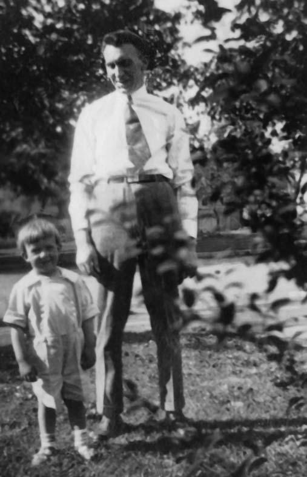

CAMPBELL COUSINS CORRESPONDENCE
Elmira Heights, N.Y.,
October 7, 1923.
Dear Cousins:-
I really do not know what to write about. Our family is small and with Mama and Eva both writing we will no doubt write about the same things.
1. The property Sam Hazlett purchased in 1810-wbt
- Report No. 2 - Page 16
-
(Maria Campbell
Family)

* * * * *
Photo of
John Hazlett, Sr.
John Hazlett, Jr.
Taken Summer of 1923
* * * * *
Mother and Dad live about two blocks from us. Dad is still in the grocery business, Jack, Sr. helping him. Dad is very well and works every day. Lucy, the younger daughter, is a freshman in Syracuse University, while Margaret and her husband, Carl Kresge, are living with Mother and Dad. They have the dearest blue?eyed daughter, Jean Louise, nearly five months old. Mother also has Dorothy, six years old, (Blaine's daughter) with her. Blaine's wife died about four weeks after Uncle Will Monroe. Clinton, their oldest son, is married and lives in Detroit.
Sincerely
yours,
COUSIN TREVA H. HAZLETT
- Report No. 2 - Page 17 -
(Maria Campbell
Family)